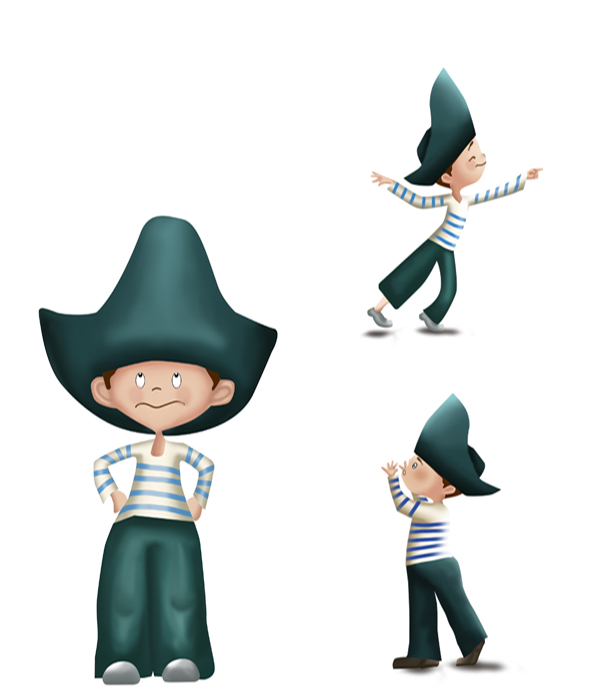
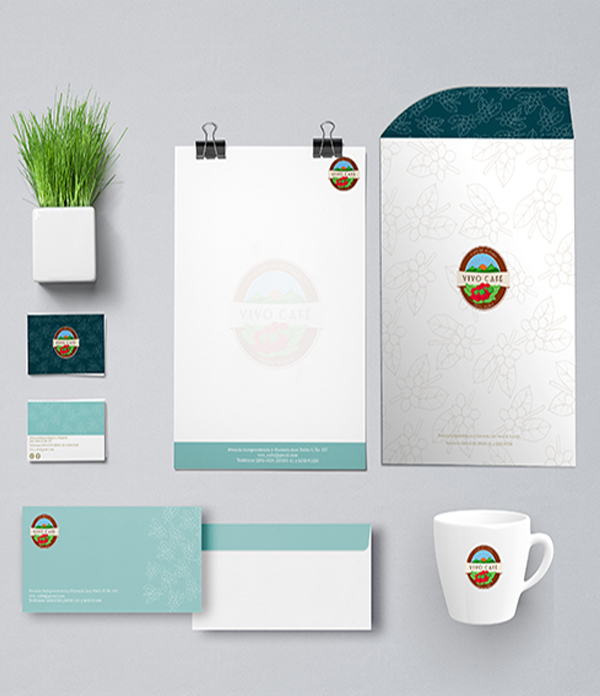

Ilustración
Diseño e ilustración de personaje para cuento infantil
El cuento trata de un niño que vive una aventura al zarpar mar adentro. Cuento donde hay brujas tesoros y hechizos.
Programa:
Photoshop.


Fotografía
Edición fotografica
Cámara:NIKON D3000
Modelo:Steven Quintanilla
Año:2018
Branding
Marca: Vivo Café
Objetivo: Rediseño de logo y crear un cambio de imagen para la cafeteria Vivo Café
Resultado:Sin alejarse del concepto del logo original se creó algo innovador, una propuesta fresca con una nueva linea gráfica con elementos que lo conforman e identifican.
